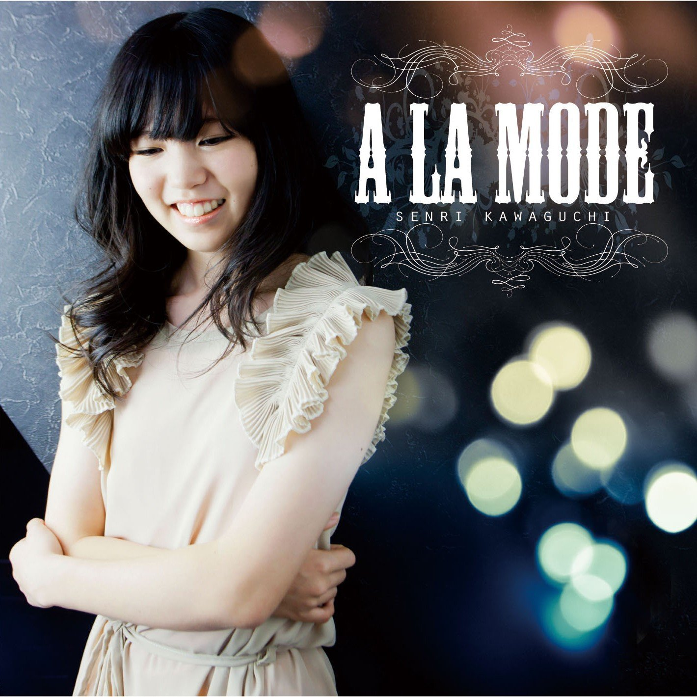

| TOP | weblog | TIPS | Works | リンク |
| 2013-04-17 やっぱり凄かった 川口 千里  川口千里の１st アルバム「A LA MDE」ずっと気になっていたんだけど、MP3Tubeもアップされる気配無く、レンタルは無理と分かったのでAmazonで購入しました。 曲はつまらないけど、ドラミングはやっぱり凄かったです。 オフィシャルっぽい動画は下の１本だけみたいです。 黒い服の演奏はフェイクですが白い服はレコーディングそのものと思われます。 手数セッション vs 川口千里 at 名古屋ell.SIZE (この曲と同じライブ、舞台そでからの録画) Bass 江川ほーじん、ツーバス ぼこぼこです。 Sailing Alone / 櫻井哲夫 [ Senri BeeHive Session Vol.4 ] Senri's Super Session - Spanish Pirates (Kyoji Yamamoto) / live version 菅沼孝三＆天地雅楽ドラムコンテスト プロドラマー川口千里 デモ演奏 Senri Kawaguchi x ZOOM Q2HD Something Like This / SENRI's live session Something Like This (Kozo Suganuma) drum cover by SENRI The Sun and The Melody - part 2 / FRAGILE (Drum Cover) Senri x Kozo Drums Battle (YAMAHA PHX vs Hipgig) 女性ドラマーつながりで方一つ。 Suzanne Morissette Wedding Dress Drum Solo なかなかファンキーな花嫁です。 |